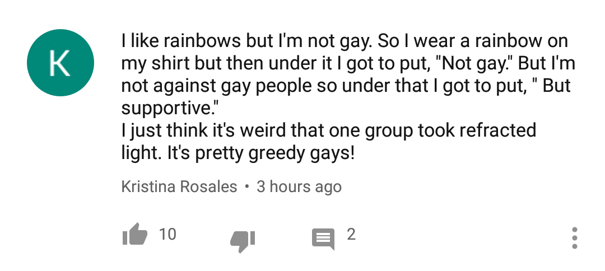

the straights are at it again
Reblog if you are a greedy gay hoarding refracted light all for your greedy gay self
I totally am, but also: I have a story. The time: 1995. The place: a small liberal arts college. We decided to participate in “denim day” which was a widespread event wherein on National Coming Out Day, you would wear denim to indicate SUPPORT FOR the LGBT community. Our support group made posters that were very, very clear about this. Wearing denim did not mean that you were coming out, it meant you supported anyone around you who might.
I have never seen so many suits and khakis IN MY LIFE. People who accidentally wore jeans went home and changed.
The community took it as a rebuke. We drew in closer to eachother, and felt unwelcome everywhere we thought we had friends before.
And I had people later tell me “You know I support you, just… I didn’t want anyone to think I was.” First off, I DON’T know you support me. Not if you refuse to, for one day, change nothing about your life to show it. Second off… why is that such a terrifying thought to you?
I remember before rainbows were a “gay thing”. They were everywhere. Church walls next to arks. School walls next to sunshine faces. People have VOLUNTARILY abandoned every other use. I have HEARD PEOPLE SAY they just couldn’t use rainbows anymore because people would think of “gay stuff.”
So I know this is a joke, and a stolen one at that, but you’ve done this to yourselves. If someone is so terrified of being perceived as queer that they will INSTANTLY abandon something they like if it has queer germs on it now or something, then they don’t deserve refracted light.
Maybe help us change the world into a place where being mistaken for queer would be just a thing to chuckle about and you can have refracted light back.
The LGBTQ+ community didn’t steal the rainbow. The straights abandoned it.
Make Queerphobes Abandon Everything 2018
Something something Pepe The Frog
Pepe the Frog is the very least of it.
I don’t know how well people remember it these days, but…the amount of cultural stuff that got totally abandoned in the wake of World War II, by dint of seeming too Nazi-coded, was staggering. We discarded basically the entire Western tradition of heroic monumental architecture, the red-black-white color scheme still makes people wince, there are Haydn pieces (written in the 1700s) that to this day you’ll have a hard time getting musicians to play…
My father has a collection of elephant paraphernalia. Various people over the years, including at certain points my mother, have attempted to convince him to take it out of public view for fear that someone might think he’s a Republican.
And, yes, this don’t-touch-the-tainted-thing methodology is very stupid. My sympathies are entirely with the people complaining about how the sexuality-movement-marker function of the rainbow has infected and consumed all usages of it.
But I would be more sympathetic if I thought that any of these people would pull their weight in keeping innocuous symbols and identities from getting swallowed by culture war.